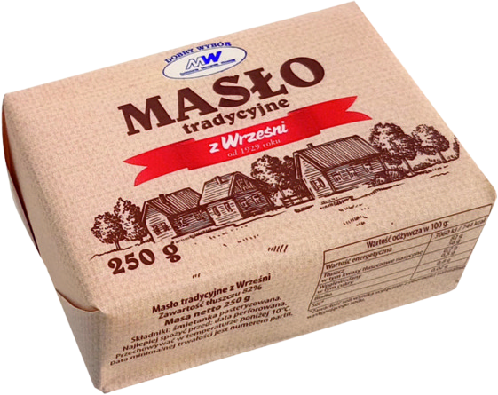
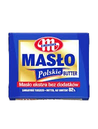
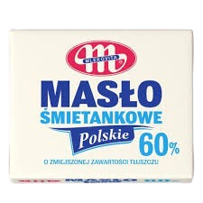
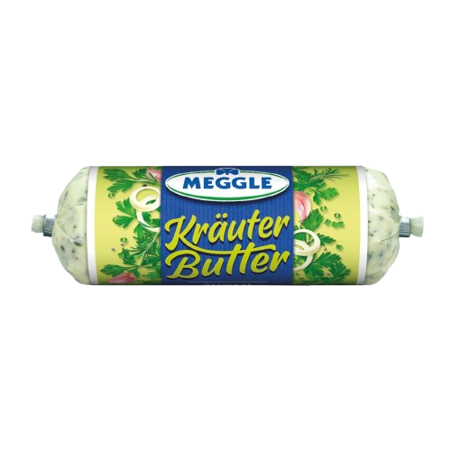
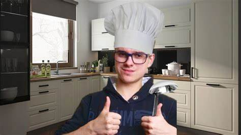

Portal Kwidzyniak
serwis miasta Kwidzyń
Menu
Portal Kwidzyniak
Zarejestruj sie do wyborów nowego wójta gminy Kwidzyń
Sponsor wyborów gminy Kwidzyń-Kwidzyńskie Zakłady Mleczarskie™
Zapraszamy do Kwidzynia!
Jakim masłem dzisiaj jesteś???




TIDZIMI
- Polski twórca internetowy z Kwidzynia, popularny przez jego połączenia z Grafem oraz memy z masłem kwidzyńksim oraz Kopułami które buduje na singleplayer snapshocie :/ (troche smutne ngl)
